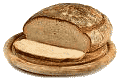
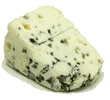
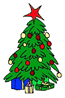

Мы привыкли считать грибки неизбежным злом, источником инфекций и других неприятных явлений, таких как плесень на хлебе, однако оказывается, что они могут приносить немало пользы. Ниже мы расскажем о грибках, без которых не было бы привычного нам Нового года.
Мы привыкли считать грибки неизбежным злом, источником инфекций и других неприятных явлений, таких как плесень на хлебе; однако оказывается, что и грибки могут приносить немало пользы. Ниже мы расскажем о грибках, без которых не было бы привычного нам Нового года.
Шоколад
Превращение горьких какао-бобов в восхитительные шоколадные сладости не обходится без так называемой «ферментации» с участием грибков Candida krusei и Geotrichum. Кроме того, в выживании какао-деревьев немалую роль играет симбиоз с микоризальными грибками Acaulospora scrobiculata и др.
Хлеб и сдоба

Поскольку корни хлебопекарного ремесла теряются в глубине веков, важная роль грибков Saccharomyces cerevisiae, называемых также хлебопекарными дрожжами, как в истории кулинарии, так и в истории человечества не подлежит сомнению. Выделение диоксида углерода, сопровождающее жизнедеятельность данных грибков, приводит к «подъёму» теста. Нельзя также не упомянуть аскомицет Ashbya gossypii, с жизнедеятельностью которого связано образование витамина B2 в муке.
Алкогольные напитки
Применение пивных дрожжей (Saccharomyces cerevisiae) не ограничивается приготовлением хлебобулочных изделий. Процесс анаэробной ферментации с участием данных грибков используется при производстве вина, шампанского, пива и других алкогольных напитков.
А приготовление сакэ, помимо Saccharomyces cerevisiae, не обходится без грибков Aspergillus oryzae (превращают рисовый крахмал в сахара), а также Lactobacillus sake и других лактобактерий.
Съедобные грибы
Какой новогодний стол обходится без блюд из грибов! Грибы относятся к разряду деликатесов, они вкусны и полезны, содержат белки и витамины группы В в больших количествах, а также различные минеральные элементы.
Сыр

Как вы, вероятно, знаете, в производстве большинства сыров используются ферменты определённых бактерий, створаживающие молоко. Полученные хлопья спрессовываются в куски сыра, которые затем подвергаются «созреванию». В процессе приготовления некоторых деликатесных сыров, таких как рокфор, бри, камамбер используются грибки. При производстве сыров с так называемой «голубой плесенью» (рокфор, горгонзола и стилтон) используют Penicillium roquefortii, споруляция которых и вызывает характерное окрашивание. Белый налёт на поверхности бри и камамбера представляет собой мицелий Penicillium camembertii.
Соевый соус
Если вы являетесь поклонником восточной кухни, даже Новый год не заставит вас отказаться от соевого соуса. Настоящий соевый соус подвергается в процессе приготовления трёхступенчатой ферментации при участии грибков Aspergillus oryzae и Zygosaccharomyces rouxii, а также бактерий Pediococcus halophilus.
Газированные напитки
Ни один праздник не обходится без газированных напитков. Лимонная кислота, использующаяся в их приготовлении, производится при участии грибка Aspergillus niger.
Лекарственные препараты

Поскольку в Новогодние праздники никто не хочет болеть, нельзя не вспомнить про огромное количество лекарственных препаратов, в производстве которых используются грибки.
Так, в производстве антибиотиков группы пенициллина принимают участие грибки Penicillium chrysogenum и родственные им виды, цефалоспоринов — Cephalosporium acremonium, гризеофульвина— Penicillium griseofulvum. В производстве глюкокортикоидов кортизона и преднизона— грибки Rhizopus nigricans. Ловастатин (препарат, снижающий уровень холестерина) продуцируется грибками Aspergillus terreus, другой препарат данной группы, мевастатин — грибками Hypomyces, Paecilomyces и Trichoderma, циклоспорин — грибками Cordyceps subsessilis.
Многие грибы, такие как Lentinula edodes (шитаки), Grifola frondosa («гриб-баран»), Ganoderma lucidum и Cordyceps sinensis используются в средствах нетрадиционной восточной медицины.
Новогодняя ёлка

И, конечно, ни один Новый год не обходится без ёлки и, следовательно, без грибков. Во-первых, большинство растений (до 90%) живут в симбиозе с грибками, формирующими микоризы в области их корней. Грибки получают от растений углеводы, образующиеся в процессе фотосинтеза, в свою очередь, обеспечивая повышение адсорбции корнями воды и минеральных веществ. Отсутствие грибков-симбионтов приводит к столь выраженному нарушению роста деревьев, что и десятилетнее дерево может не превышать 1 метра в высоту. Большинство хвойных деревьев (ель, сосна, пихта и др.) живут в симбиозе с эктомикоризальными грибами Basidiomycota и Ascomycota, хорошо известным по характерным наростам на поверхности стволов. Ряд других вечнозелёных деревьев (можжевельник, кипарис) — с эндомикоризальными грибками Zygomycota, поэтому на их стволах вы никогда не увидите наростов.
Таким образом, важная роль грибков в процессе встречи Нового года не подлежит сомнению. Дополнительную информацию о роли грибков в нашей жизни вы можете найти на сайте Tom Volk's Fungi. А мы желаем Вам весёлых праздников и хорошего Нового года!
Tom Volk's Christmas fungi